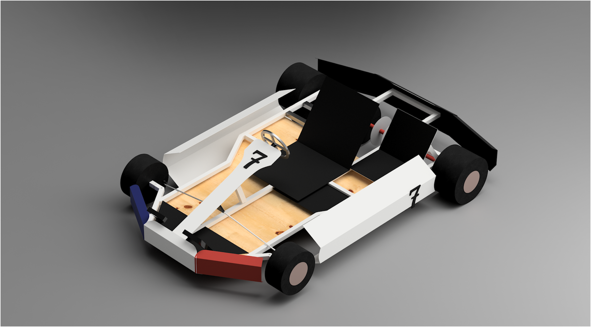

Projets
Voici quelques-uns des projets personnels que j'ai réalisés récemment.

Fabrication d'un Karting 2 places
Modélisation et fabrication en collaboration avec mon frère.
Voir le projetCréation d'une base de données
Base de données pour contrôler les données de qualité de l’air.
Voir le projetDéveloppement d'un mini site web
Site pour lister les 8 plus grandes inventions avec HTML et CSS.
Voir le projet